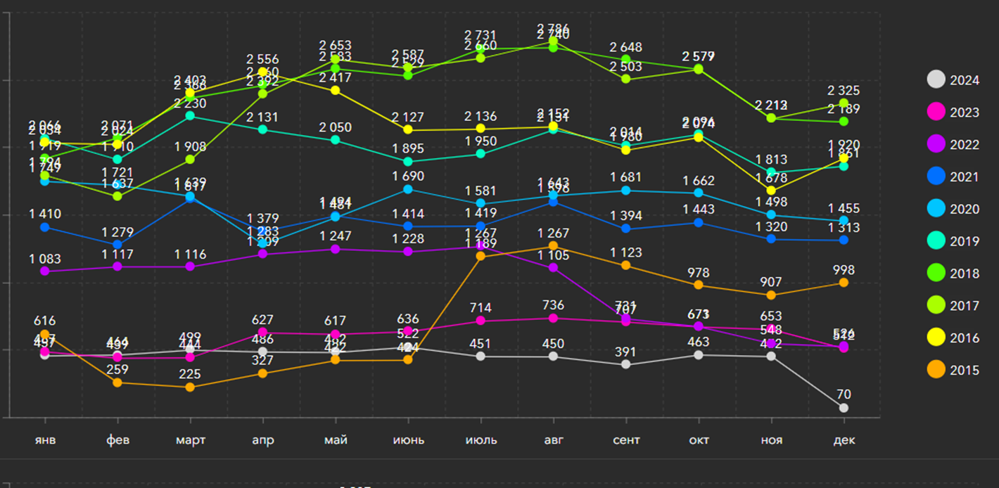

Выбор года
Категория тяжести
Жесткие преступления
Тяжкие преступления
За 10 месяцев 2022 года зарегистрировано уголовных правонарушений – 140592, что на 1,8% больше, чем за аналогичный период предыдущего года (138093), из них 86,0% или 120985 – преступлений, 14,0% или 19607 – уголовные проступки.
Больше всего уголовных правонарушений зарегистрировано в регионах:
Динамика по категориям тяжести:
В ВКО Усть-Каменогорск лидирует по уровню преступности. За 2020 год в областном центре произошло больше преступлений, чем в других городах и районах Восточно-Казахстанской области.
На каждые 10 000 человек пришлось 282 преступления, что является самым высоким показателем по региону.